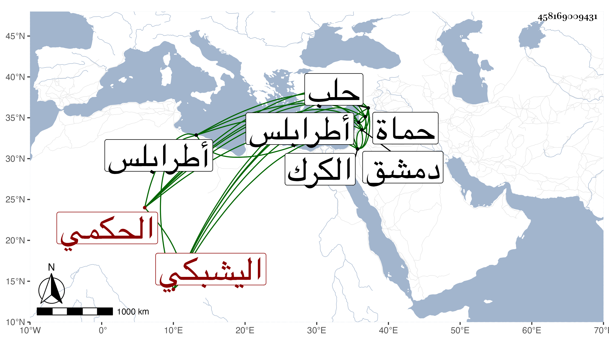

0902Sakhawi.DawLamic.ITO20230111-ara1.EIS1600.458169009431
Biography ID: 458169009431
1085
اينال اليشبكي يشبك الحكمي ويقال له حاج اينال ونسبه بعضهم مؤيديا خدم عند بعض الأمراء قليلا لما أمسك أستاذه المذكور ثم صار من أمراء دمشق ثم قدم بها في أيام الظاهر جقمق ثم نقل لنيابة الكرك ثم لحماة ثم لطرابلس ثم لحلب بعد جانب في سنة ثلاث وستين كل ذلك بالبذل إلى أن مات بها في ليلة الخميس سابع عشري شعبان ودفن من الغد وقد قارب الستين ، وكان مسرفا على نفسه بل ساءت سيرته بأخرة وأبغضه الحلبيون ورجموه غير مرة لكثرة متاجره وشرهه في جمع المال مع سكون وعقل ورياسة وحشمة وتواضع .
